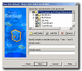

| network |
| home page |
| CCS provides a support form from which you can report problems to CCS. . Construction Computer Software produces an integrated Project Management System specifically designed for the Construction Industry. The major components are Estimating, Valuations, Project Planning and Project CashFlow, used by project planners and contractors for greater accuracy and productivity. For more information about the CCS System view our Information Page. |
|  |